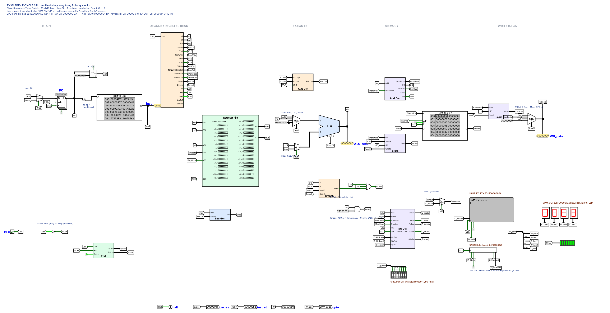

<title>RV32I đơn chu kỳ và pipeline</title>
<meta name="claude:viewport-fit-sides" content="cover">
<link rel="preconnect" href="https://fonts.googleapis.com">
<link rel="stylesheet" href="https://fonts.googleapis.com/css2?family=Archivo:wght@500;700;800&family=Source+Sans+3:ital,wght@0,400;0,600;1,400&family=JetBrains+Mono:wght@400;600&display=swap&subset=vietnamese">
<style>
/* Layout: một cột đọc ~70ch, sơ đồ và giản đồ thời gian được rộng hơn, cuộn ngang riêng.
   Màu nhận diện = 5 màu của 5 tầng (IF ID EX MEM WB), dùng nhất quán ở mọi hình. */
:root {
  --bg: #f3f5f7;
  --surface: #ffffff;
  --fg: #1b2430;
  --muted: #5a6675;
  --line: #d5dbe2;
  --accent: #2b5fd9;
  --accent2: #8a5cd6;
  --if: #3d7be6;  --id: #8a5cd6;  --ex: #e0732e;  --mem: #1f9e8a;  --wb: #c4466a;
  --stall: #b98a00; --flush: #9aa3ad; --nop: #7d8b99; --bad: #c4372f; --good: #1d8a4d;
  --cell-fg: #ffffff;
  --display: "Archivo", "Arial Narrow", system-ui, sans-serif;
  --body: "Source Sans 3", "Segoe UI", system-ui, sans-serif;
  --mono: "JetBrains Mono", Consolas, "Courier New", monospace;
}
@media (prefers-color-scheme: dark) {
  :root:not([data-theme="light"]) {
    --bg: #12161c; --surface: #1a2028; --fg: #e3e8ee; --muted: #9aa6b4; --line: #2e3742; --accent: #7aa2ff; --accent2: #b08cf0;
    --if: #4f8cf0; --id: #9a72e0; --ex: #e5813f; --mem: #2bb39d; --wb: #d55a7d;
    --stall: #d9a920; --flush: #5d6773; --nop: #6f7c8a; --bad: #ef6b62; --good: #44c07a; --cell-fg: #0e1217;
    color-scheme: dark;
  }
}
:root[data-theme="dark"] {
  --bg: #12161c; --surface: #1a2028; --fg: #e3e8ee; --muted: #9aa6b4; --line: #2e3742; --accent: #7aa2ff; --accent2: #b08cf0;
  --if: #4f8cf0; --id: #9a72e0; --ex: #e5813f; --mem: #2bb39d; --wb: #d55a7d;
  --stall: #d9a920; --flush: #5d6773; --nop: #6f7c8a; --bad: #ef6b62; --good: #44c07a; --cell-fg: #0e1217;
  color-scheme: dark;
}
body {
  background: var(--bg); color: var(--fg); font: 17px/1.6 var(--body);
  padding-left: max(16px, env(safe-area-inset-left, 0px));
  padding-right: max(16px, env(safe-area-inset-right, 0px));
  padding-block: 40px 72px;
}
main { max-width: 1000px; margin: 0 auto; display: grid; gap: 64px; }
section { display: grid; gap: 16px; min-width: 0; }
.prose { max-width: 70ch; }
h1, h2, h3 { font-family: var(--display); text-wrap: balance; line-height: 1.15; margin: 0; }
h1 { font-size: clamp(30px, 5vw, 46px); font-weight: 800; letter-spacing: -0.01em; }
h2 { font-size: 26px; font-weight: 700; }
h3 { font-size: 19px; font-weight: 700; }
p { margin: 0; }
code, .mono { font-family: var(--mono); font-size: 0.88em; }
code { background: color-mix(in srgb, var(--line) 55%, transparent); padding: 1px 5px; border-radius: 4px; }
.eyebrow { font: 600 13px/1 var(--mono); letter-spacing: 0.08em; text-transform: uppercase; color: var(--muted); }
.lede { font-size: 19px; color: var(--muted); max-width: 66ch; }
header { display: grid; gap: 14px; }
nav.toc { display: flex; flex-wrap: wrap; gap: 6px 18px; font-size: 15px; }
nav.toc a { color: var(--muted); text-decoration: none; border-bottom: 1px solid var(--line); }
nav.toc a:hover, nav.toc a:focus-visible { color: var(--accent); border-color: var(--accent); }
.stages { display: flex; flex-wrap: wrap; gap: 6px; margin-top: 6px; }
.chip { font: 600 12px/1 var(--mono); padding: 6px 9px; border-radius: 4px; color: var(--cell-fg); }
.c-IF { background: var(--if); } .c-ID { background: var(--id); } .c-EX { background: var(--ex); }
.c-ME { background: var(--mem); } .c-WB { background: var(--wb); }
.c-st { background: var(--stall); } .c-fl { background: var(--flush); } .c-nop { background: var(--nop); }

.scroll { overflow-x: auto; min-width: 0; }
.panel { background: var(--surface); border: 1px solid var(--line); border-radius: 8px; padding: 18px; }
table { border-collapse: collapse; font-variant-numeric: tabular-nums; width: 100%; }
th, td { text-align: left; padding: 7px 10px; border-bottom: 1px solid var(--line); vertical-align: top; }
th { font: 600 12px/1.3 var(--mono); letter-spacing: 0.04em; text-transform: uppercase; color: var(--muted); }
td.num, th.num { text-align: right; font-family: var(--mono); font-size: 14px; white-space: nowrap; }
tbody tr:last-child td { border-bottom: 0; }
.pass { color: var(--good); font-weight: 600; } .fail { color: var(--bad); font-weight: 600; }
.cap { font-size: 14px; color: var(--muted); }
figure { margin: 0; display: grid; gap: 8px; }
figure .shot { background: #ffffff; border: 1px solid var(--line); border-radius: 8px; padding: 8px; overflow-x: auto; }
figure .shot img { display: block; width: 100%; min-width: 760px; max-width: none; height: auto; }

/* Sơ đồ khối đơn chu kỳ, bấm lệnh để tô đường đi */
.picker { display: flex; flex-wrap: wrap; gap: 6px; }
.picker button { font: 600 13px/1 var(--mono); padding: 8px 11px; border-radius: 6px; border: 1px solid var(--line);
  background: var(--surface); color: var(--fg); cursor: pointer; }
.picker button[aria-pressed="true"] { background: var(--accent); border-color: var(--accent); color: var(--surface); }
.picker button:focus-visible { outline: 2px solid var(--accent); outline-offset: 2px; }
.dp { display: grid; grid-template-columns: repeat(5, minmax(150px, 1fr)); gap: 10px; min-width: 820px; }
.dp .col { display: grid; gap: 8px; align-content: start; }
.dp .colhead { font: 700 13px/1 var(--mono); letter-spacing: .06em; padding: 7px 8px; border-radius: 4px; color: var(--cell-fg); }
.blk { border: 1.5px solid var(--line); border-radius: 6px; padding: 8px 9px; background: var(--surface); display: grid; gap: 2px;
  transition: opacity .2s, border-color .2s, background .2s; }
.blk b { font: 700 13.5px/1.25 var(--display); }
.blk span { font-size: 12.5px; line-height: 1.35; color: var(--muted); }
.blk .sig { font: 600 11.5px/1.3 var(--mono); color: var(--accent); }
.dp.active .blk { opacity: .28; }
.dp.active .blk.on { opacity: 1; border-color: var(--accent); background: color-mix(in srgb, var(--accent) 9%, var(--surface)); }
.walk { display: grid; grid-template-columns: minmax(0, 1fr) minmax(0, 1fr); gap: 16px; }
@media (max-width: 760px) { .walk { grid-template-columns: 1fr; } }
.walk ol { margin: 0; padding-left: 22px; display: grid; gap: 6px; font-size: 15.5px; }
.sigtab td, .sigtab th { padding: 5px 8px; font-size: 13.5px; }
.sigtab td:first-child { font-family: var(--mono); }
.sigtab td.v { font-family: var(--mono); font-weight: 600; }
.sigtab tr.off td.v { color: var(--muted); font-weight: 400; }

/* Bảng thành phần */
.comp td:first-child { white-space: nowrap; font-weight: 600; }
.comp td { font-size: 15px; }
.comp .stage { width: 8px; padding: 0; }
.comp tr.grp td { font: 700 12px/1 var(--mono); letter-spacing: .06em; text-transform: uppercase; color: var(--muted); padding-top: 18px; }

/* Trục thời gian (ps) */
.timeline { display: grid; gap: 22px; }
.tl-row { display: grid; gap: 6px; }
.tl-head { display: flex; justify-content: space-between; gap: 12px; flex-wrap: wrap; font-size: 15px; }
.tl-head b { font-family: var(--display); }
.tl-track { position: relative; min-width: 640px; }
.tl-lane { position: relative; height: 22px; margin-bottom: 3px; }
.seg { position: absolute; top: 0; height: 22px; display: flex; align-items: center; justify-content: center;
  font: 600 11px/1 var(--mono); color: var(--cell-fg); border-right: 1px solid var(--surface); overflow: hidden; }
.axis { position: relative; height: 18px; border-top: 1px solid var(--line); margin-top: 4px; font: 11px/1 var(--mono); color: var(--muted); }
.axis span { position: absolute; top: 4px; transform: translateX(-50%); white-space: nowrap; }
.clk { position: absolute; top: 0; bottom: 18px; border-left: 1px dashed var(--line); }

/* Bảng các thay đổi */
.changes { display: grid; border-top: 1px solid var(--line); }
.change { display: grid; grid-template-columns: 210px 1fr; gap: 18px; padding: 18px 0; border-bottom: 1px solid var(--line); }
.change > div { min-width: 0; display: grid; gap: 6px; }
.change .name { font: 700 17px/1.3 var(--display); }
.change .mods { font: 12.5px/1.4 var(--mono); color: var(--muted); }
.change .see { font-size: 15px; color: var(--muted); }
.change .see b { color: var(--fg); font-weight: 600; }
@media (max-width: 640px) { .change { grid-template-columns: 1fr; gap: 6px; } }

/* Giản đồ pipeline */
.seg2 { display: inline-flex; border: 1px solid var(--line); border-radius: 7px; overflow: hidden; }
.seg2 button { font: 600 13.5px/1 var(--body); padding: 9px 14px; border: 0; background: var(--surface); color: var(--fg); cursor: pointer; }
.seg2 button + button { border-left: 1px solid var(--line); }
.seg2 button[aria-pressed="true"] { background: var(--accent); color: var(--surface); }
.seg2 button:focus-visible { outline: 2px solid var(--accent); outline-offset: -2px; }
.pd { border-collapse: separate; border-spacing: 2px; width: auto; }
.pd th, .pd td { border: 0; padding: 0; }
.pd thead th { font: 10.5px/1 var(--mono); color: var(--muted); text-align: center; width: 27px; padding-bottom: 4px; text-transform: none; letter-spacing: 0; }
.pd td.ins { font: 13px/1.2 var(--mono); padding-right: 12px; white-space: nowrap; }
.pd td.ins.fl { color: var(--muted); text-decoration: line-through; }
.pd td.ins.np { color: var(--muted); }
.pd td.cell { width: 27px; height: 22px; text-align: center; font: 600 10px/22px var(--mono); color: var(--cell-fg); border-radius: 3px; }
.pd td.note { font-size: 13.5px; color: var(--muted); padding-left: 12px; white-space: nowrap; }
.pd td.note .tag { font: 600 11px/1 var(--mono); padding: 3px 6px; border-radius: 3px; color: var(--cell-fg); margin-right: 6px; }
.legend { display: flex; flex-wrap: wrap; gap: 8px 16px; font-size: 14px; color: var(--muted); }
.legend span { display: inline-flex; align-items: center; gap: 6px; }
.legend i { width: 14px; height: 14px; border-radius: 3px; display: inline-block; }
.stat { font: 600 15px/1.4 var(--body); }
.stat b { font-family: var(--mono); }

/* Biểu đồ tăng tốc */
.bars { display: grid; gap: 12px; }
.bar { display: grid; grid-template-columns: 120px 1fr 58px; gap: 4px 10px; align-items: center; font-size: 14px; }
.bar .lbl { font-family: var(--mono); font-size: 13px; white-space: nowrap; overflow: hidden; text-overflow: ellipsis; grid-row: span 2; }
.bar .trk { position: relative; height: 13px; background: color-mix(in srgb, var(--line) 50%, transparent); border-radius: 3px; }
.bar .fill { position: absolute; inset: 0 auto 0 0; border-radius: 3px; }
.bar .fill.pl { background: var(--accent); } .bar .fill.nh { background: var(--nop); }
.bar .ref { position: absolute; top: -3px; bottom: -3px; border-left: 2px dashed var(--muted); }
.bar .val { font-family: var(--mono); font-size: 12.5px; text-align: right; }

.cols { display: grid; grid-template-columns: 1fr 1fr; gap: 16px; }
.cols > * { min-width: 0; }
@media (max-width: 760px) { .cols { grid-template-columns: 1fr; } }
pre { margin: 0; font: 13px/1.55 var(--mono); background: var(--surface); border: 1px solid var(--line); border-radius: 8px; padding: 14px 16px; overflow-x: auto; }
ol, ul { margin: 0; padding-left: 22px; display: grid; gap: 6px; }
.formula { font: 15px/1.6 var(--mono); background: var(--surface); border-left: 3px solid var(--accent); padding: 10px 14px; overflow-x: auto; }
a { color: var(--accent); }
@media (prefers-reduced-motion: reduce) { .blk { transition: none; } }
</style>

<main>
<header>
  <div class="eyebrow">Bài tập lớn · Kiến trúc máy tính tiên tiến · Logisim-evolution 4.1.0</div>
  <h1>RV32I: CPU đơn chu kỳ và CPU pipeline 5 tầng</h1>
  <p class="lede">Ba file mạch chạy cùng tập lệnh RV32I và cùng chương trình. CPU đơn chu kỳ chạy hết một lệnh rồi mới tới lệnh sau. CPU pipeline chia đường đi của lệnh thành 5 tầng và cho 5 lệnh chạy gối nhau. Bản pipeline thứ ba bỏ phần cứng xử lý hazard, để thấy phần cứng đó làm được gì.</p>
  <div class="stages">
    <span class="chip c-IF">IF nạp lệnh</span><span class="chip c-ID">ID giải mã, đọc thanh ghi</span><span class="chip c-EX">EX tính toán</span><span class="chip c-ME">MEM đọc/ghi RAM</span><span class="chip c-WB">WB ghi thanh ghi</span>
  </div>
  <nav class="toc">
    <a href="#ket-qua">Kết quả chạy</a><a href="#don-chu-ky">CPU đơn chu kỳ</a><a href="#y-tuong">Ý tưởng pipeline</a>
    <a href="#thay-doi">Pipeline thêm gì</a><a href="#hazard">Chưa có và có khối hazard</a><a href="#tang-toc">Tăng tốc</a><a href="#chay-lai">Tự chạy lại</a>
  </nav>
</header>

<section id="ket-qua">
  <div class="eyebrow">1 · Chạy thử cả ba</div>
  <h2>Cùng kết quả, khác số chu kỳ</h2>
  <p class="prose">Mỗi chương trình trong <code>programs/</code> được chạy headless trên file <code>.circ</code> bằng <code>tools/run_tests.py</code>, rồi so với mô hình tham chiếu <code>tools/rvsim.py</code> trên 32 thanh ghi, toàn bộ RAM, TTY, GPIO và số chu kỳ. Cả ba file qua 12/12 chương trình và 25/25 chương trình sinh ngẫu nhiên trong <code>programs/fuzz</code>. Riêng bản NoHazard chỉ chạy đúng khi assembler chèn <code>nop</code> vào chương trình (cờ <code>--nohazard</code>, giải thích ở mục 5).</p>
  <div class="scroll panel">
    <table id="runs">
      <thead><tr><th>Chương trình</th><th>Nội dung</th><th class="num">Lệnh</th><th class="num">Đơn chu kỳ</th><th class="num">NoHazard + nop</th><th class="num">Pipeline</th><th class="num">CPI pipeline</th></tr></thead>
      <tbody></tbody>
    </table>
  </div>
  <p class="cap">Đơn vị: số chu kỳ clock do Logisim đếm, đã gồm 32 lệnh mà runner chèn vào cuối để xuất thanh ghi ra RAM. t11_io đọc bàn phím nên runner không so số chu kỳ. Đo ngày 2026-11-05.</p>
</section>

<section id="don-chu-ky">
  <div class="eyebrow">2 · CPU đơn chu kỳ</div>
  <h2>Gồm những gì và chạy một lệnh ra sao</h2>
  <p class="prose">CPU đơn chu kỳ giải bài toán cơ bản nhất của một bộ xử lý: đọc từng lệnh máy RV32I trong bộ nhớ và làm đúng việc lệnh đó mô tả. Trạng thái mà chương trình nhìn thấy gồm thanh ghi PC, 32 thanh ghi <code>x0..x31</code> và bộ nhớ dữ liệu. Mỗi lệnh đổi trạng thái đó theo đặc tả, ví dụ <code>add</code> ghi tổng vào <code>rd</code>, <code>sw</code> ghi vào RAM, <code>beq</code> đổi PC.</p>
  <p class="prose">Ở bản này, toàn bộ đường đi của một lệnh là mạch tổ hợp nối từ PC tới các phần tử nhớ. Trong một chu kỳ, tín hiệu chạy qua đủ 5 bước nạp lệnh, giải mã, tính toán, truy cập bộ nhớ, ghi kết quả. Ở cạnh lên của clock, PC, thanh ghi đích và RAM cùng nhận giá trị mới, rồi lệnh kế tiếp bắt đầu. Vì vậy CPI luôn bằng 1 và không bao giờ có hai lệnh cùng nằm trong CPU.</p>

  <figure>
    <div class="shot"></div>
    <figcaption class="cap">Mạch top-level <code>RV32I_SingleCycle</code> sau khi chạy <code>demo.s</code>: TTY in <code>Hello RISC-V!</code>, LED 7 đoạn hiện <code>00E8</code>. Năm nhãn FETCH, DECODE, EXECUTE, MEMORY, WRITE BACK ở trên cùng là cách mạch được bố trí, cùng một chu kỳ.</figcaption>
  </figure>

  <h3>Bấm một lệnh để xem nó đi qua khối nào</h3>
  <div class="picker" id="picker" role="group" aria-label="Chọn lệnh"></div>
  <div class="panel scroll"><div class="dp active" id="dp"></div></div>
  <div class="walk">
    <div class="panel" style="display:grid;gap:10px">
      <div class="eyebrow" id="walk-title"></div>
      <ol id="walk"></ol>
    </div>
    <div class="panel scroll">
      <table class="sigtab"><thead><tr><th>Tín hiệu Control</th><th>Giá trị</th><th>Nghĩa</th></tr></thead><tbody id="sigs"></tbody></table>
    </div>
  </div>

  <h3>Chức năng từng thành phần</h3>
  <div class="panel scroll">
    <table class="comp">
      <thead><tr><th>Thành phần</th><th>Làm gì</th><th>Giải quyết vấn đề gì</th></tr></thead>
      <tbody id="comp"></tbody>
    </table>
  </div>

  <h3>Giới hạn của thiết kế này</h3>
  <p class="prose">Chu kỳ clock phải đủ dài cho lệnh chậm nhất là <code>lw</code>: PC → IMEM → RegisterFile → ALU → AddrDecode → RAM → LoadUnit → MUX WBSel → RegisterFile. Lệnh <code>add</code> không đụng tới RAM vẫn phải chờ hết chu kỳ đó, và trong lúc ALU tính thì IMEM, RAM đứng không. Pipeline ra đời để tận dụng các khối đang rảnh đó.</p>
</section>

<section id="y-tuong">
  <div class="eyebrow">3 · Ý tưởng pipeline</div>
  <h2>Chu kỳ ngắn lại, các lệnh chạy gối nhau</h2>
  <p class="prose">Pipeline đặt 4 thanh ghi chắn giữa 5 tầng, nên chu kỳ clock chỉ cần dài bằng tầng chậm nhất cộng thời gian của thanh ghi. Một lệnh vẫn mất 5 chu kỳ để đi hết đường, nhưng mỗi chu kỳ có một lệnh mới vào và một lệnh hoàn thành.</p>
  <div class="panel scroll"><div class="timeline" id="tl"></div></div>
  <p class="cap">Trễ của từng tầng là số giả định theo sách Patterson &amp; Hennessy (IF 200, ID 100, EX 200, MEM 200, WB 100 ps, thanh ghi pipeline 20 ps). Logisim không mô phỏng trễ cổng, nên phần thời gian chỉ dùng để lập luận. Số chu kỳ thì đo thật.</p>
</section>

<section id="thay-doi">
  <div class="eyebrow">4 · Pipeline đã sửa gì so với đơn chu kỳ</div>
  <h2>Giữ nguyên 11 khối, thêm 7 khối</h2>
  <p class="prose">File <code>RV32I_Pipeline.circ</code> dùng lại nguyên 11 sub-circuit của bản đơn chu kỳ (Control, RegisterFile, ImmGen, ALUControl, ALU, BranchUnit, AddrDecode, StoreUnit, LoadUnit, PerfCounters, IOController). Phần thêm vào là 4 thanh ghi pipeline để chia tầng và 3 khối xử lý hazard. Hazard là những trường hợp chạy gối nhau làm sai kết quả hoặc nạp sai lệnh. Bản đơn chu kỳ không bao giờ gặp vì mỗi lúc chỉ có một lệnh.</p>
  <div class="changes">
    <div class="change">
      <div><div class="name">4 thanh ghi pipeline</div><div class="mods">IF_ID · ID_EX · EX_MEM · MEM_WB</div></div>
      <div>
        <p>Cắt đường tổ hợp dài thành 5 đoạn. Mỗi thanh ghi giữ mọi thứ các tầng sau cần về lệnh đó: dữ liệu, số thanh ghi đích <code>rd</code> và cả tín hiệu điều khiển. Ở bản đơn chu kỳ, Control sinh tín hiệu dùng ngay trong cùng chu kỳ. Ở pipeline, lệnh mang theo tín hiệu của nó qua từng tầng, ví dụ <code>RegWrite</code> sinh ở ID nhưng tới WB mới dùng.</p>
        <p>Mỗi thanh ghi có chân <code>EN</code> (bằng 0 thì giữ nguyên, dùng để stall) và <code>FLUSH</code> (nạp toàn 0, biến lệnh thành bubble vì lệnh <code>0x00000000</code> cho mọi tín hiệu điều khiển bằng 0).</p>
        <p class="see"><b>Thấy ở đâu:</b> Pipeline Monitor góc dưới mạch hiện PC và mã lệnh của cả 5 tầng cùng lúc.</p>
      </div>
    </div>
    <div class="change">
      <div><div class="name">Forwarding</div><div class="mods">ForwardUnit</div></div>
      <div>
        <p>Lệnh <code>addi t0, t0, 1</code> cần <code>t0</code> của lệnh ngay trước, nhưng lệnh trước mới tính xong ở EX, 2 chu kỳ nữa mới ghi vào RegFile. ForwardUnit so <code>rd</code> trong EX/MEM và MEM/WB với <code>rs1</code>, <code>rs2</code> của lệnh đang ở EX, và điều khiển MUX lấy thẳng giá trị đó vào ALU. EX/MEM được ưu tiên vì là kết quả mới nhất, và không forward khi <code>rd = x0</code>.</p>
        <p class="see"><b>Thấy ở đâu:</b> tín hiệu <code>FwdA</code>, <code>FwdB</code> trên monitor (01 = lấy từ EX/MEM, 10 = từ MEM/WB).</p>
      </div>
    </div>
    <div class="change">
      <div><div class="name">Bypass WB → ID</div><div class="mods">IDBypass</div></div>
      <div>
        <p>Lệnh ở WB ghi RegFile ở cạnh lên cuối chu kỳ, còn lệnh ở ID đọc trong chính chu kỳ đó nên đọc phải giá trị cũ. IDBypass so <code>rd</code> của WB với <code>rs</code> của ID và lấy luôn dữ liệu đang ghi. Khối này đặt ngoài RegisterFile vì RegisterFile dùng chung với bản đơn chu kỳ, nơi bypass bên trong sẽ tạo vòng tổ hợp với lệnh kiểu <code>addi x1, x1, 1</code>.</p>
      </div>
    </div>
    <div class="change">
      <div><div class="name">Stall khi load-use</div><div class="mods">HazardUnit</div></div>
      <div>
        <p>Dữ liệu của <code>lw</code> chỉ có ở cuối tầng MEM, trong khi lệnh ngay sau cần nó ở đầu tầng EX cùng chu kỳ. Forwarding không đưa dữ liệu ngược thời gian được, nên HazardUnit giữ PC và IF/ID (<code>EN = 0</code>) một chu kỳ và chèn bubble vào ID/EX. Sau đó dữ liệu được forward từ MEM/WB.</p>
        <p class="see"><b>Thấy ở đâu:</b> <code>Stall = 1</code>, <code>LoadUse = 1</code>; lệnh ở tầng EX của chu kỳ sau là <code>00000000</code>.</p>
      </div>
    </div>
    <div class="change">
      <div><div class="name">Flush khi nhảy</div><div class="mods">HazardUnit</div></div>
      <div>
        <p>Ở bản đơn chu kỳ, PC kế tiếp được chọn ngay trong chu kỳ của lệnh nhảy. Ở pipeline, BranchUnit chỉ biết kết quả khi lệnh nhảy tới EX, lúc đó 2 lệnh sau nó đã được nạp vào IF và ID. CPU đoán là không nhảy và cứ nạp PC+4. Nếu thật sự nhảy (<code>Redirect = 1</code>), PC nhận địa chỉ đích và IF/ID, ID/EX bị flush. Mỗi lần nhảy mất 2 chu kỳ.</p>
        <p class="see"><b>Thấy ở đâu:</b> <code>Redirect = 1</code>; 2 tầng IF, ID chuyển thành <code>00000000</code> ở chu kỳ sau.</p>
      </div>
    </div>
    <div class="change">
      <div><div class="name">Dừng máy và đếm lệnh</div><div class="mods">valid, Halt trong các thanh ghi pipeline</div></div>
      <div>
        <p>Bản đơn chu kỳ dừng ngay khi gặp <code>ebreak</code>. Ở pipeline, <code>ebreak</code> ở ID làm ngừng nạp lệnh, còn chân <code>halt</code> chỉ bật khi nó tới WB, lúc mọi lệnh trước đã ghi xong. Bộ đếm <code>instret</code> đếm theo bit <code>valid</code> ở WB để bubble không bị tính là lệnh.</p>
      </div>
    </div>
  </div>
</section>

<section id="hazard">
  <div class="eyebrow">5 · Khi chưa có và khi đã có khối hazard</div>
  <h2>Bỏ ForwardUnit và load-use stall thì phải trả giá bằng nop</h2>
  <p class="prose"><code>circ/extra/RV32I_Pipeline_NoHazard.circ</code> giống hệt bản pipeline, chỉ khác 2 chỗ: MUX forwarding bị nối cứng vào giá trị đọc ở ID, và chân <code>E_MemRead</code> của HazardUnit nối hằng 0 nên không bao giờ stall vì load-use. Flush khi nhảy và bypass WB → ID vẫn còn.</p>
  <h3>Chạy chương trình bình thường: sai cả 12/12</h3>
  <div class="panel scroll">
    <table id="nohaz">
      <thead><tr><th>Chương trình</th><th>Không chèn nop</th><th>Lỗi đầu tiên gặp phải</th><th>Có chèn nop</th></tr></thead>
      <tbody></tbody>
    </table>
  </div>
  <p class="prose">Lỗi xuất hiện ngay từ lệnh thứ hai của <code>demo.s</code>: <code>li sp, 0x3FF0</code> được dịch thành <code>lui sp, 4</code> và <code>addi sp, sp, -16</code> đứng liền nhau. Không có forwarding, <code>addi</code> đọc <code>sp</code> cũ bằng 0 nên ra <code>0xFFFFFFF0</code>. Ba chương trình bị nhảy sai chỗ và lặp mãi.</p>

  <h3>Cách làm cho bản NoHazard chạy đúng: assembler chèn nop</h3>
  <p class="prose">Không có phần cứng thì phần mềm phải tự tránh hazard, giống các CPU MIPS đời đầu. Bản NoHazard chỉ đọc đúng một thanh ghi khi lệnh ghi thanh ghi đó đã đi trước ít nhất 3 lệnh, vì khi đó lệnh ghi đang ở WB và bypass WB → ID đưa giá trị sang. Chạy <code>tools/rvasm.py --nohazard</code> thì assembler duyệt chương trình sau khi đã mở rộng lệnh giả, và chèn <code>addi x0, x0, 0</code> cho đủ khoảng cách đó:</p>
  <div class="formula">lệnh đọc rd của lệnh ngay trước     → chèn 2 nop<br>lệnh đọc rd của lệnh trước 2 lệnh   → chèn 1 nop<br>lệnh ngay sau jal / jalr            → không cần (chỉ tới được bằng lệnh nhảy, đã có 2 chu kỳ flush)</div>
  <p class="prose">Nhãn và offset nhánh được tính lại sau khi chèn nên chương trình vẫn đúng. File NoHazard trong repo đã nạp sẵn <code>demo.s</code> có chèn 122 <code>nop</code>: mở trong Logisim, bấm Ctrl+K, kết quả giống hai bản kia nhưng dừng ở chu kỳ 358 thay vì 248.</p>

  <h3>Cùng 15 lệnh của t06_hazard.s trên hai bản pipeline</h3>
  <div class="seg2" role="group" aria-label="Chọn bản pipeline">
    <button type="button" id="b-pl" aria-pressed="true">Có ForwardUnit + HazardUnit</button>
    <button type="button" id="b-nh" aria-pressed="false">Không có, assembler chèn nop</button>
  </div>
  <p class="stat" id="pd-stat"></p>
  <div class="legend">
    <span><i class="c-IF"></i>IF</span><span><i class="c-ID"></i>ID</span><span><i class="c-EX"></i>EX</span><span><i class="c-ME"></i>MEM</span><span><i class="c-WB"></i>WB</span>
    <span><i class="c-st"></i>stall (ở lại ID)</span><span><i class="c-fl"></i>bị flush</span><span><i class="c-nop"></i>nop chèn thêm</span>
  </div>
  <div class="panel scroll"><table class="pd" id="pd"></table></div>
  <p class="prose">Mỗi hàng là một lệnh, mỗi cột là một chu kỳ. Cột ghi chú cho biết toán hạng lấy từ đâu: <code>RF</code> là đọc RegisterFile bình thường, <code>EX/MEM</code> và <code>MEM/WB</code> là forwarding, <code>WB→ID</code> là bypass. Ở bản có khối hazard, giá trị được lấy tắt ngay chu kỳ sau nên chỉ phải chờ ở 3 chỗ load-use. Ở bản chèn nop, mỗi phụ thuộc liền kề tốn 2 chu kỳ chạy nop, kể cả khi kết quả đã có sẵn từ cuối tầng EX.</p>

  <h3>Khối hazard cải thiện được gì</h3>
  <div class="panel scroll">
    <table id="gain">
      <thead><tr><th>Chương trình</th><th class="num">Lệnh</th><th class="num">nop phải chạy</th><th class="num">Chu kỳ NoHazard</th><th class="num">Chu kỳ Pipeline</th><th class="num">Bớt được</th></tr></thead>
      <tbody></tbody>
    </table>
  </div>
  <p class="prose">Phần cứng xử lý hazard đem lại hai thứ. Thứ nhất là đúng đắn: chương trình viết bình thường chạy đúng, không cần trình biên dịch biết cấu trúc pipeline. Thứ hai là tốc độ: forwarding bỏ được gần hết thời gian chờ, chỉ còn 1 chu kỳ cho mỗi load-use. Với <code>t09_recursion</code>, bản NoHazard phải chạy thêm 2895 nop, còn bản đầy đủ chỉ stall 464 chu kỳ. Code chèn nop cũng dài hơn, <code>demo.s</code> tăng từ 57 lên 102 word trong ROM.</p>
</section>

<section id="tang-toc">
  <div class="eyebrow">6 · Nhanh hơn bao nhiêu</div>
  <h2>CPI tăng, thời gian vẫn giảm</h2>
  <p class="prose">CPI của bản đơn chu kỳ luôn bằng 1. CPI của pipeline lớn hơn 1 vì có chu kỳ mồi đầu, stall và flush. Runner kiểm tra công thức sau khớp với Logisim ở mọi chương trình:</p>
  <div class="formula">cycles_pipeline = N_lệnh + 4 + 1 × (số load-use) + 2 × (số lần nhảy)</div>
  <p class="prose">Thời gian chạy bằng số chu kỳ nhân độ dài chu kỳ. Với 800 ps và 220 ps ở mục 3, tăng tốc tối đa là 800 / 220 ≈ 3,64 lần khi CPI = 1 (nét đứt).</p>
  <div class="panel" style="display:grid;gap:14px">
    <div class="legend"><span><i style="background:var(--accent)"></i>Pipeline đầy đủ</span><span><i style="background:var(--nop)"></i>NoHazard + nop</span></div>
    <div class="bars" id="bars"></div>
  </div>
  <p class="prose">Chương trình nhiều phép tính tuần tự như <code>t01_alu</code> gần mức tối đa nhất. Chương trình nhiều vòng lặp và lời gọi hàm như <code>t09_recursion</code> thấp nhất: 4797 lệnh mà có 1260 lần nhảy, tức 2520 chu kỳ bị flush. Đưa quyết định nhánh lên ID hoặc thêm bộ dự đoán nhánh sẽ giảm phần này (mục Phase 12 trong <code>docs/LO_TRINH.md</code>).</p>
</section>

<section id="chay-lai">
  <div class="eyebrow">7 · Tự chạy lại</div>
  <h2>Lệnh và thao tác để demo</h2>
  <div class="cols">
    <div style="display:grid;gap:10px">
      <h3>Terminal (Git Bash, thư mục Project)</h3>
<pre>export LOGISIM_JAR="/c/Program Files/Logisim-evolution/app/logisim-evolution-4.1.0-all.jar"

# đơn chu kỳ và pipeline đầy đủ
python tools/run_tests.py circ/RV32I_SingleCycle.circ
python tools/run_tests.py circ/RV32I_Pipeline.circ

# NoHazard: không chèn nop -> FAIL, có chèn -> PASS
python tools/run_tests.py circ/extra/RV32I_Pipeline_NoHazard.circ --timeout 20
python tools/run_tests.py circ/extra/RV32I_Pipeline_NoHazard.circ --nohazard

# bảng so sánh 3 bản + giản đồ từng chu kỳ
python tools/compare.py
python tools/compare.py programs/t06_hazard.s

# file hex có chèn nop để nạp vào ROM của bản NoHazard
python tools/rvasm.py programs/t08_sort.s --nohazard -o build/t08_sort.nohazard</pre>
    </div>
    <div style="display:grid;gap:10px">
      <h3>Trong Logisim</h3>
      <ol>
        <li>Mở <code>circ/RV32I_SingleCycle.circ</code>, bấm Ctrl+K. TTY in <code>Hello RISC-V!</code>, LED 7 đoạn hiện <code>00E8</code>. Khi <code>halt = 1</code>, <code>cycles</code> = 188.</li>
        <li>Mở <code>circ/RV32I_Pipeline.circ</code>: cùng kết quả, <code>cycles</code> = 248, <code>instret</code> vẫn 188.</li>
        <li>Ctrl+R rồi bấm Ctrl+T từng nhịp, nhìn Pipeline Monitor: 5 tầng chứa 5 lệnh khác nhau. Dừng ở chỗ <code>Stall = 1</code> (sau một <code>lw</code>) và chỗ <code>Redirect = 1</code> (nhánh nhảy), chỉ ra các ô <code>00000000</code> là bubble.</li>
        <li>Mở <code>circ/extra/RV32I_Pipeline_NoHazard.circ</code>: cùng kết quả, <code>cycles</code> = 358, <code>instret</code> = 310 (188 lệnh + 122 nop).</li>
        <li>Chuột phải ROM IMEM của bản NoHazard → Load Image → <code>build/demo.text.hex</code> (bản không chèn nop), Ctrl+R, Ctrl+K: TTY không in đúng, LED không hiện <code>00E8</code>.</li>
      </ol>
    </div>
  </div>
</section>
</main>

<script>
// ---------------- Số liệu đo (tools/run_tests.py, Logisim-evolution 4.1.0, 2026-11-05) ----------------
// [tên, nội dung, lệnh, đơn chu kỳ, NoHazard + nop, pipeline]
const RUNS = [
  ["demo.s", "demo: chuỗi, vòng lặp, I/O", 220, 220, 392, 282],
  ["t01_alu.s", "số học, logic, dịch", 69, 69, 84, 75],
  ["t02_upper.s", "LUI, AUIPC", 46, 46, 62, 52],
  ["t03_branch.s", "6 loại nhánh", 86, 86, 159, 124],
  ["t04_jump.s", "JAL, JALR, bảng nhảy", 116, 116, 198, 170],
  ["t05_mem.s", "LW/LH/LB/SW/SH/SB", 64, 64, 84, 70],
  ["t06_hazard.s", "forwarding, stall, flush", 81, 81, 158, 110],
  ["t07_fib.s", "Fibonacci", 178, 178, 284, 222],
  ["t08_sort.s", "sắp xếp mảng", 456, 456, 800, 677],
  ["t09_recursion.s", "đệ quy, stack", 4797, 4797, 10218, 7787],
  ["t10_hello.s", "in chuỗi ra UART", 129, 129, 219, 183],
  ["t11_io.s", "GPIO + bàn phím", 135, null, null, null],
];
// tools/compare.py (không tính đoạn dump): lệnh, nop, NoHazard, pipeline, load-use
const GAIN = [
  ["demo.s", 188, 122, 358, 248, 12], ["t01_alu.s", 37, 9, 50, 41, 0], ["t02_upper.s", 14, 10, 28, 18, 0],
  ["t03_branch.s", 54, 35, 125, 90, 0], ["t04_jump.s", 84, 28, 164, 136, 0], ["t05_mem.s", 32, 14, 50, 36, 0],
  ["t06_hazard.s", 49, 53, 124, 76, 5], ["t07_fib.s", 146, 62, 250, 188, 0], ["t08_sort.s", 424, 168, 766, 643, 45],
  ["t09_recursion.s", 4765, 2895, 10184, 7753, 464], ["t10_hello.s", 97, 52, 185, 149, 16], ["t11_io.s", 103, 94, 225, 139, 8],
];
const NOHAZ = [
  ["demo.s", "sp = 0xFFFFFFF0, đúng là 0x00003FF0"],
  ["t01_alu.s", "t1 = 0, đúng là 1"],
  ["t02_upper.s", "a4 = 0xFFFFFEEF, đúng là 0xDEADBEEF"],
  ["t03_branch.s", "a0 = 0x41, đúng là 0x37; chạy 90 lệnh thay vì 86"],
  ["t04_jump.s", "ra = 0, đúng là 0x3C; gần hết thanh ghi bằng 0"],
  ["t05_mem.s", "t5 = 0xFFFFFABE, đúng là 0xCAFEBABE"],
  ["t06_hazard.s", "không dừng sau 20 s"],
  ["t07_fib.s", "a0 = 0x72, đúng là 0x1A6D"],
  ["t08_sort.s", "mảng sắp sai: mem[0x0000] = 0x2A, đúng là 0xFFFFF800"],
  ["t09_recursion.s", "không dừng sau 20 s"],
  ["t10_hello.s", "TTY không in gì, đúng là \"Hello, RISC-V!\""],
  ["t11_io.s", "không dừng sau 20 s"],
];
const T_SC = 800, T_PL = 220;
const $ = id => document.getElementById(id);

// ---------------- Bảng 1 ----------------
$('runs').querySelector('tbody').innerHTML = RUNS.map(([n, d, ins, sc, nh, pl]) => `
  <tr><td class="mono">${n}</td><td>${d}</td><td class="num">${ins}</td>
  <td class="num">${sc ?? 'PASS'}</td><td class="num">${nh ?? 'PASS'}</td><td class="num">${pl ?? 'PASS'}</td>
  <td class="num">${pl ? (pl / ins).toFixed(2) : '–'}</td></tr>`).join('');

// ---------------- Sơ đồ khối đơn chu kỳ ----------------
const BLOCKS = {
  PC:   ["IF", "PC", "thanh ghi 32 bit, địa chỉ lệnh đang chạy", "EN = !Halt"],
  ADD4: ["IF", "Adder PC + 4", "địa chỉ lệnh kế tiếp", "pc4"],
  IMEM: ["IF", "IMEM (ROM 1K × 32)", "chứa chương trình, đọc theo PC[11:2]", "instr"],
  NPC:  ["IF", "MUX next PC", "chọn PC+4 hoặc địa chỉ nhảy", "PCSel"],
  CTL:  ["ID", "Control", "giải mã opcode, sinh tín hiệu điều khiển", "RegWrite ASel BSel …"],
  RF:   ["ID", "Register File", "32 × 32 bit, đọc rs1, rs2; ghi rd", "RD1 RD2 · WE"],
  IMM:  ["ID", "ImmGen", "lấy hằng số trong lệnh, mở rộng dấu", "ImmSel"],
  ALUC: ["EX", "ALUControl", "chọn phép ALU từ ALUOp, funct3, bit 30", "ALUCtrl"],
  AMUX: ["EX", "MUX ASel", "toán hạng A: rs1, PC hoặc 0", "ASel"],
  BMUX: ["EX", "MUX BSel", "toán hạng B: rs2 hoặc imm", "BSel"],
  ALU:  ["EX", "ALU", "10 phép: cộng, trừ, dịch, so sánh, logic", "Y = alu"],
  BU:   ["EX", "BranchUnit", "so rs1 với rs2 cho 6 lệnh nhánh", "Taken"],
  TGT:  ["EX", "PCSel và target", "PCSel = Taken | Jal | Jalr, target = ALU & ~1", "PCSel"],
  AD:   ["ME", "AddrDecode", "tách địa chỉ RAM / I/O, byte offset", "RamWE IsIO"],
  RAM:  ["ME", "DMEM (RAM 16 KiB)", "bộ nhớ dữ liệu", "RamWE"],
  ST:   ["ME", "StoreUnit", "ghép byte/half mới vào word cũ", "New"],
  LD:   ["ME", "LoadUnit", "tách byte/half/word, mở rộng dấu", "loaddata"],
  IO:   ["ME", "IOController + TTY, bàn phím, LED", "thiết bị ở địa chỉ 0xF000_00xx", "IsIO"],
  WBM:  ["WB", "MUX WBSel", "chọn dữ liệu ghi rd: ALU, RAM hoặc PC+4", "WBSel"],
  RFW:  ["WB", "Register File (cổng ghi)", "ghi rd ở cạnh lên clock", "RegWrite"],
  HALT: ["WB", "Halt, PerfCounters", "dừng PC khi ebreak; đếm cycles, instret", "Halt"],
};
const COLS = [["IF", "FETCH", "c-IF"], ["ID", "DECODE", "c-ID"], ["EX", "EXECUTE", "c-EX"], ["ME", "MEMORY", "c-ME"], ["WB", "WRITE BACK", "c-WB"]];
const BASE = ["PC", "ADD4", "IMEM", "NPC", "CTL"];
// sig: RegWrite ASel BSel ImmSel ALUOp MemRead MemWrite WBSel Branch Jal Jalr Halt
const INS = {
  add:   { asm: "add t2, t0, t1", hex: "006283b3", use: [...BASE, "RF", "ALUC", "AMUX", "BMUX", "ALU", "WBM", "RFW"],
    sig: [1, "0 rs1", "0 rs2", "–", "10", 0, 0, "0 ALU", 0, 0, 0, 0],
    walk: ["IMEM[PC] cho mã lệnh 0x006283B3. Adder tính PC + 4.", "Control nhận nhóm OP (opcode 0110011). RegisterFile đọc t0, t1.", "ASel = rs1, BSel = rs2. ALUControl lấy funct3 = 000 và bit 30 = 0 nên chọn ADD. ALU tính t0 + t1.", "Không dùng RAM (MemRead = MemWrite = 0).", "WBSel = ALU. Ở cạnh lên clock: t2 nhận tổng, PC nhận PC + 4."] },
  addi:  { asm: "addi t0, t0, 1", hex: "00128293", use: [...BASE, "RF", "IMM", "ALUC", "AMUX", "BMUX", "ALU", "WBM", "RFW"],
    sig: [1, "0 rs1", "1 imm", "0 I", "11", 0, 0, "0 ALU", 0, 0, 0, 0],
    walk: ["IMEM[PC] cho 0x00128293.", "Control: nhóm OP-IMM. RegisterFile đọc t0. ImmGen lấy imm 12 bit định dạng I = 1.", "BSel = imm. ALUOp = 11 nên ALUControl bỏ qua bit 30 (với ADDI bit đó thuộc immediate). ALU tính t0 + 1.", "Không dùng RAM.", "Cạnh lên clock: t0 nhận t0 + 1, PC nhận PC + 4."] },
  lw:    { asm: "lw t4, 0(sp)", hex: "00012e83", use: [...BASE, "RF", "IMM", "ALUC", "AMUX", "BMUX", "ALU", "AD", "RAM", "LD", "WBM", "RFW"],
    sig: [1, "0 rs1", "1 imm", "0 I", "00", 1, 0, "1 Mem", 0, 0, 0, 0],
    walk: ["IMEM[PC] cho 0x00012E83.", "Control: nhóm LOAD. RegisterFile đọc sp. ImmGen cho offset 0.", "ALUOp = 00 nên ALU cộng: địa chỉ = sp + 0.", "AddrDecode lấy WordAddr = Addr[13:2], Off = Addr[1:0]. RAM xuất word ở địa chỉ đó. LoadUnit theo funct3 = 010 lấy nguyên 4 byte.", "WBSel = Mem. Cạnh lên clock: t4 nhận dữ liệu đọc, PC nhận PC + 4. Đây là lệnh có đường đi dài nhất, quyết định độ dài chu kỳ clock."] },
  sw:    { asm: "sw t3, 0(sp)", hex: "01c12023", use: [...BASE, "RF", "IMM", "ALUC", "AMUX", "BMUX", "ALU", "AD", "RAM", "ST"],
    sig: [0, "0 rs1", "1 imm", "1 S", "00", 0, 1, "–", 0, 0, 0, 0],
    walk: ["IMEM[PC] cho 0x01C12023.", "Control: nhóm STORE, RegWrite = 0. RegisterFile đọc sp (địa chỉ) và t3 (dữ liệu). ImmGen ghép offset định dạng S.", "ALU tính sp + 0.", "StoreUnit lấy word cũ ở địa chỉ đó, thay phần cần ghi (cả word với SW, 1 byte với SB) bằng t3. AddrDecode bật RamWE vì địa chỉ không thuộc vùng I/O.", "Cạnh lên clock: RAM ghi word mới, PC nhận PC + 4. Không ghi thanh ghi nào."] },
  beq:   { asm: "beq a0, t3, ok1", hex: "01c50663", use: [...BASE, "RF", "IMM", "ALUC", "AMUX", "BMUX", "ALU", "BU", "TGT"],
    sig: [0, "1 PC", "1 imm", "2 B", "00", 0, 0, "–", 1, 0, 0, 0],
    walk: ["IMEM[PC] cho 0x01C50663.", "Control: nhóm BRANCH. RegisterFile đọc a0, t3. ImmGen ghép offset định dạng B (bit 0 luôn 0).", "Hai việc chạy song song: BranchUnit so a0 với t3 theo funct3 = 000 (bằng nhau) ra Taken; ALU tính PC + offset làm địa chỉ đích.", "Không dùng RAM.", "PCSel = Taken. Cạnh lên clock: PC nhận địa chỉ đích nếu nhảy, PC + 4 nếu không."] },
  jal:   { asm: "jal ra, square", hex: "05c000ef", use: [...BASE, "IMM", "ALUC", "AMUX", "BMUX", "ALU", "TGT", "WBM", "RFW"],
    sig: [1, "1 PC", "1 imm", "4 J", "00", 0, 0, "2 PC+4", 0, 1, 0, 0],
    walk: ["IMEM[PC] cho 0x05C000EF.", "Control: nhóm JAL. ImmGen ghép offset 21 bit định dạng J.", "ALU tính PC + offset = địa chỉ hàm square.", "Không dùng RAM.", "WBSel = PC + 4: ra nhận địa chỉ trở về. PCSel = Jal = 1: PC nhận địa chỉ hàm."] },
  jalr:  { asm: "ret  (jalr x0, ra, 0)", hex: "00008067", use: [...BASE, "RF", "IMM", "ALUC", "AMUX", "BMUX", "ALU", "TGT", "WBM", "RFW"],
    sig: [1, "0 rs1", "1 imm", "0 I", "00", 0, 0, "2 PC+4", 0, 0, 1, 0],
    walk: ["IMEM[PC] cho 0x00008067.", "Control: nhóm JALR. RegisterFile đọc ra. ImmGen cho offset 0.", "ALU tính ra + 0. Cổng AND xóa bit 0 theo đặc tả JALR.", "Không dùng RAM.", "rd = x0 nên việc ghi PC + 4 không có tác dụng. PC nhận địa chỉ trở về."] },
  lui:   { asm: "lui sp, 4", hex: "00004137", use: [...BASE, "IMM", "ALUC", "AMUX", "BMUX", "ALU", "WBM", "RFW"],
    sig: [1, "2 zero", "1 imm", "3 U", "00", 0, 0, "0 ALU", 0, 0, 0, 0],
    walk: ["IMEM[PC] cho 0x00004137.", "Control: nhóm LUI. ImmGen tạo imm = 4 << 12 = 0x4000.", "ASel = 0 nên ALU tính 0 + 0x4000.", "Không dùng RAM.", "Cạnh lên clock: sp = 0x00004000, PC nhận PC + 4. AUIPC đi đúng đường này nhưng ASel = PC."] },
  ebreak:{ asm: "ebreak", hex: "00100073", use: [...BASE, "HALT"],
    sig: [0, "–", "–", "–", "–", 0, 0, "–", 0, 0, 0, 1],
    walk: ["IMEM[PC] cho 0x00100073.", "Control: nhóm SYSTEM, bật Halt = 1.", "Không tính gì.", "Không dùng RAM.", "PCEn = !Halt = 0 nên PC giữ nguyên, PerfCounters ngừng đếm, chân halt = 1 và Logisim dừng mô phỏng."] },
};
const SIGN = [["RegWrite", "có ghi rd không"], ["ASel", "toán hạng A của ALU"], ["BSel", "toán hạng B của ALU"], ["ImmSel", "định dạng immediate"],
  ["ALUOp", "00 cộng, 10 R-type, 11 I-type"], ["MemRead", "đọc RAM/I/O"], ["MemWrite", "ghi RAM/I/O"], ["WBSel", "dữ liệu ghi vào rd"],
  ["Branch", "lệnh nhánh"], ["Jal", "lệnh JAL"], ["Jalr", "lệnh JALR"], ["Halt", "dừng máy"]];
(function () {
  $('dp').innerHTML = COLS.map(([k, name, cls]) => `<div class="col"><div class="colhead ${cls}">${name}</div>` +
    Object.entries(BLOCKS).filter(([, b]) => b[0] === k).map(([id, b]) =>
      `<div class="blk" data-id="${id}"><b>${b[1]}</b><span>${b[2]}</span><span class="sig">${b[3]}</span></div>`).join('') + '</div>').join('');
  $('picker').innerHTML = Object.entries(INS).map(([k, v]) => `<button type="button" data-k="${k}" aria-pressed="false">${k}</button>`).join('');
  function show(k) {
    const v = INS[k], on = new Set(v.use);
    document.querySelectorAll('#dp .blk').forEach(el => el.classList.toggle('on', on.has(el.dataset.id)));
    document.querySelectorAll('#picker button').forEach(b => b.setAttribute('aria-pressed', b.dataset.k === k));
    $('walk-title').textContent = `${v.asm} · 0x${v.hex.toUpperCase()} · 1 chu kỳ`;
    const stages = ['Fetch', 'Decode', 'Execute', 'Memory', 'Write back'];
    $('walk').innerHTML = v.walk.map((t, i) => `<li><b>${stages[i]}.</b> ${t}</li>`).join('');
    $('sigs').innerHTML = SIGN.map(([n, m], i) => {
      const val = v.sig[i];
      const off = val === 0 || val === '–';
      return `<tr class="${off ? 'off' : ''}"><td>${n}</td><td class="v">${val}</td><td>${m}</td></tr>`;
    }).join('');
  }
  $('picker').addEventListener('click', e => { const b = e.target.closest('button'); if (b) show(b.dataset.k); });
  show('lw');
})();

// ---------------- Bảng thành phần ----------------
const COMP = [
  ["Nạp lệnh (FETCH)", "IF"],
  ["PC", "Thanh ghi 32 bit giữ địa chỉ của lệnh đang chạy. Nhận giá trị mới ở mỗi cạnh lên clock, trừ khi Halt = 1.", "CPU cần biết đang ở lệnh nào trong chương trình."],
  ["Adder PC + 4", "Cộng 4 vào PC.", "Mỗi lệnh RV32I dài 4 byte, nên lệnh kế tiếp nằm ở PC + 4."],
  ["IMEM (ROM 1K × 32)", "Chứa mã máy của chương trình. Địa chỉ là PC[11:2], tức PC chia 4.", "Tách bộ nhớ lệnh khỏi bộ nhớ dữ liệu (kiểu Harvard) để đọc lệnh và đọc/ghi dữ liệu trong cùng một chu kỳ."],
  ["MUX next PC", "PCSel = 0 chọn PC + 4, PCSel = 1 chọn target.", "Cho phép lệnh nhánh và lệnh nhảy đổi luồng chương trình."],
  ["Giải mã (DECODE)", "ID"],
  ["Control", "Tách lệnh thành rd, rs1, rs2, funct3, bit 30. Decoder trên opcode chọn 1 trong 10 nhóm lệnh, các cổng OR sinh 12 tín hiệu điều khiển cho toàn mạch.", "Cùng một datapath phải làm việc khác nhau cho từng lệnh. Control quyết định MUX nào chọn gì, khối nào được ghi."],
  ["Register File", "32 thanh ghi 32 bit. Hai cổng đọc tổ hợp (rs1, rs2) và một cổng ghi (rd) ở cạnh lên clock khi RegWrite = 1. x0 không phải thanh ghi thật mà là hằng 0.", "Lưu toán hạng và kết quả. Hai cổng đọc đủ cho lệnh cần 2 toán hạng như add, sw, beq."],
  ["ImmGen", "Ghép các mảnh bit của lệnh thành hằng số theo 5 định dạng I, S, B, U, J rồi mở rộng dấu lên 32 bit.", "RISC-V đặt immediate ở vị trí khác nhau tùy định dạng để rs1, rs2, rd luôn cùng vị trí. ImmGen gom chúng lại."],
  ["Thực thi (EXECUTE)", "EX"],
  ["ALUControl", "Từ ALUOp, funct3 và bit 30 sinh ALUCtrl 4 bit. Mã ALUCtrl = {bit 30, funct3} nên gần như chỉ là nối dây.", "Phân biệt ADD với SUB, SRL với SRA. Chặn bit 30 với ADDI vì ở đó bit 30 là một phần của immediate."],
  ["MUX ASel, MUX BSel", "A chọn rs1, PC hoặc 0. B chọn rs2 hoặc imm.", "Dùng một ALU cho mọi việc: tính toán (rs1, rs2), cộng immediate, tính địa chỉ nhánh (PC + imm), LUI (0 + imm)."],
  ["ALU", "Tính song song 10 phép (ADD, SUB, SLL, SLT, SLTU, XOR, SRL, SRA, OR, AND), MUX 8:1 theo funct3 chọn một kết quả.", "Thực hiện phép toán của lệnh. Với load/store nó tính địa chỉ, với branch/jal/jalr nó tính địa chỉ nhảy."],
  ["BranchUnit", "Hai bộ so sánh (có dấu, không dấu) cho =, <, <u. funct3[0] đảo kết quả để ra BNE, BGE, BGEU. AND với Branch ra Taken.", "ALU đang bận tính địa chỉ đích, nên việc so sánh cần một khối riêng để cả hai xong trong cùng chu kỳ."],
  ["Cổng OR PCSel, cổng AND target", "PCSel = Taken | Jal | Jalr. target = ALU & ~1.", "JALR yêu cầu xóa bit 0 của địa chỉ đích. Với branch và JAL bit đó vốn bằng 0, nên dùng chung một cổng."],
  ["Bộ nhớ (MEMORY)", "ME"],
  ["AddrDecode", "Từ địa chỉ ALU tách WordAddr = Addr[13:2], Off = Addr[1:0], IsIO = (Addr[31:28] = 0xF). RamWE = MemWrite AND NOT IsIO.", "Chia không gian địa chỉ giữa RAM và thiết bị I/O."],
  ["DMEM (RAM 4K × 32 = 16 KiB)", "Đọc không đồng bộ, ghi ở cạnh lên clock khi RamWE = 1.", "Lưu dữ liệu, mảng, stack của chương trình."],
  ["StoreUnit", "Đọc word cũ, thay byte (SB), half (SH) hoặc cả word (SW) bằng dữ liệu rs2, rồi ghi lại cả word.", "RAM của Logisim ghi theo word. Cách đọc-sửa-ghi này cho phép ghi từng byte mà không cần byte-enable."],
  ["LoadUnit", "Dịch word đọc được để byte cần lấy về vị trí thấp nhất, mở rộng dấu (LB, LH) hoặc zero (LBU, LHU).", "Lệnh load có 5 kích thước, RAM chỉ trả về cả word."],
  ["IOController, TTY, Keyboard, LED, DIP", "Các thanh ghi I/O ở 0xF0000000 (UART TX), 0xF0000004 (RX), 0xF0000008 (STATUS), 0xF0000010 (GPIO_OUT), 0xF0000014 (GPIO_IN). MUX IsIO chọn dữ liệu đọc từ RAM hay từ I/O.", "Giao tiếp với bên ngoài bằng chính lệnh lw/sw (memory-mapped I/O), không cần thêm lệnh mới."],
  ["Ghi kết quả (WRITE BACK)", "WB"],
  ["MUX WBSel", "Chọn dữ liệu ghi vào rd: kết quả ALU (0), dữ liệu load (1), PC + 4 (2).", "Lệnh tính toán ghi kết quả ALU, lệnh load ghi dữ liệu RAM, JAL/JALR ghi địa chỉ trở về."],
  ["NOT gate PCEn, PerfCounters", "PCEn = NOT Halt. PerfCounters đếm cycles và instret khi CPU còn chạy.", "Dừng máy khi gặp EBREAK/ECALL để quan sát kết quả. Đo số chu kỳ để tính CPI."],
];
$('comp').innerHTML = COMP.map(r => r.length === 2
  ? `<tr class="grp"><td colspan="3">${r[0]}</td></tr>`
  : `<tr><td>${r[0]}</td><td>${r[1]}</td><td>${r[2]}</td></tr>`).join('');

// ---------------- Trục thời gian: 5 lệnh liên tiếp ----------------
(function () {
  const st = [["IF", 200, "c-IF"], ["ID", 100, "c-ID"], ["EX", 200, "c-EX"], ["MEM", 200, "c-ME"], ["WB", 100, "c-WB"]];
  const N = 5, total = N * T_SC;
  const pct = ps => (ps / total * 100) + '%';
  function lane(start, segs) {
    let t = start;
    return `<div class="tl-lane">${segs.map(([n, w, c]) => { const h = `<div class="seg ${c}" style="left:${pct(t)};width:${pct(w)}">${n}</div>`; t += w; return h; }).join('')}</div>`;
  }
  function axis(step) { let s = ''; for (let t = 0; t <= total; t += step) s += `<span style="left:${pct(t)}">${t}</span>`; return `<div class="axis">${s}</div>`; }
  let sc = '', pl = '', clkS = '', clkP = '';
  for (let i = 0; i < N; i++) sc += lane(i * T_SC, st);
  for (let i = 0; i <= N; i++) clkS += `<div class="clk" style="left:${pct(i * T_SC)}"></div>`;
  const plSegs = st.map(([n, , c]) => [n, T_PL, c]);
  for (let i = 0; i < N; i++) pl += lane(i * T_PL, plSegs);
  for (let i = 0; i <= N + 4; i++) clkP += `<div class="clk" style="left:${pct(i * T_PL)}"></div>`;
  $('tl').innerHTML = `
    <div class="tl-row"><div class="tl-head"><b>Đơn chu kỳ</b><span>chu kỳ 800 ps · 5 lệnh xong lúc ${N * T_SC} ps</span></div>
      <div class="tl-track">${clkS}${sc}${axis(400)}</div></div>
    <div class="tl-row"><div class="tl-head"><b>Pipeline</b><span>chu kỳ 220 ps · 5 lệnh xong lúc ${(N + 4) * T_PL} ps</span></div>
      <div class="tl-track">${clkP}${pl}${axis(400)}</div></div>
    <p class="cap">Mỗi hàng là một lệnh, trục ngang là ps. Ở pipeline, ô ID và WB chiếm trọn 220 ps dù chỉ cần 100 ps, vì mọi tầng chạy theo cùng một clock.</p>`;
})();

// ---------------- NoHazard ----------------
$('nohaz').querySelector('tbody').innerHTML = NOHAZ.map(([n, e]) =>
  `<tr><td class="mono">${n}</td><td><span class="fail">FAIL</span></td><td>${e}</td><td><span class="pass">PASS</span></td></tr>`).join('');
$('gain').querySelector('tbody').innerHTML = GAIN.map(([n, ins, nop, nh, pl]) =>
  `<tr><td class="mono">${n}</td><td class="num">${ins}</td><td class="num">${nop}</td><td class="num">${nh}</td><td class="num">${pl}</td>
   <td class="num">${nh - pl} (${Math.round((nh - pl) / nh * 100)}%)</td></tr>`).join('');

// ---------------- Giản đồ t06 (xuất từ tools/compare.py) ----------------
const PD_PL = [{"a":"addi t0, zero, 1","k":"ok","st":{"3":"IF","4":"ID","5":"EX","6":"ME","7":"WB"},"src":""},{"a":"addi t0, t0, 1","k":"ok","st":{"4":"IF","5":"ID","6":"EX","7":"ME","8":"WB"},"src":"t0:EX/MEM"},{"a":"addi t1, t0, 1","k":"ok","st":{"5":"IF","6":"ID","7":"EX","8":"ME","9":"WB"},"src":"t0:EX/MEM"},{"a":"add t2, t0, t1","k":"ok","st":{"6":"IF","7":"ID","8":"EX","9":"ME","10":"WB"},"src":"t0:MEM/WB t1:EX/MEM"},{"a":"add t3, t2, t0","k":"ok","st":{"7":"IF","8":"ID","9":"EX","10":"ME","11":"WB"},"src":"t2:EX/MEM t0:WB->ID"},{"a":"add t3, t3, t3","k":"ok","st":{"8":"IF","9":"ID","10":"EX","11":"ME","12":"WB"},"src":"t3:EX/MEM t3:EX/MEM"},{"a":"sw t3, 0(sp)","k":"ok","st":{"9":"IF","10":"ID","11":"EX","12":"ME","13":"WB"},"src":"sp:RF t3:EX/MEM"},{"a":"lw t4, 0(sp)","k":"ok","st":{"10":"IF","11":"ID","12":"EX","13":"ME","14":"WB"},"src":"sp:RF"},{"a":"addi t5, t4, 1","k":"stall","st":{"11":"IF","12":"ID","14":"EX","15":"ME","16":"WB","13":".."},"src":"t4:MEM/WB"},{"a":"lw t6, 0(sp)","k":"ok","st":{"13":"IF","14":"ID","15":"EX","16":"ME","17":"WB"},"src":"sp:RF"},{"a":"sw t6, 4(sp)","k":"stall","st":{"14":"IF","15":"ID","17":"EX","18":"ME","19":"WB","16":".."},"src":"sp:RF t6:MEM/WB"},{"a":"lw a0, 4(sp)","k":"ok","st":{"16":"IF","17":"ID","18":"EX","19":"ME","20":"WB"},"src":"sp:RF"},{"a":"beq a0, t3, ok1","k":"stall","jump":true,"st":{"17":"IF","18":"ID","20":"EX","21":"ME","22":"WB","19":".."},"src":"a0:MEM/WB t3:RF"},{"a":"lui s11, 1","k":"flush","st":{"19":"IF","20":"ID"},"src":""},{"a":"addi s11, s11, -1107","k":"flush","st":{"20":"IF"},"src":""},{"a":"lw a1, 0(sp)","k":"ok","st":{"21":"IF","22":"ID","23":"EX","24":"ME","25":"WB"},"src":"sp:RF"},{"a":"addi a2, zero, 3","k":"ok","st":{"22":"IF","23":"ID","24":"EX","25":"ME","26":"WB"},"src":""}];
const PD_NH = [{"a":"addi t0, zero, 1","k":"ok","st":{"5":"IF","6":"ID","7":"EX","8":"ME","9":"WB"},"src":""},{"a":"nop","k":"nop","st":{"6":"IF","7":"ID","8":"EX","9":"ME","10":"WB"},"src":""},{"a":"nop","k":"nop","st":{"7":"IF","8":"ID","9":"EX","10":"ME","11":"WB"},"src":""},{"a":"addi t0, t0, 1","k":"ok","st":{"8":"IF","9":"ID","10":"EX","11":"ME","12":"WB"},"src":"t0:WB->ID"},{"a":"nop","k":"nop","st":{"9":"IF","10":"ID","11":"EX","12":"ME","13":"WB"},"src":""},{"a":"nop","k":"nop","st":{"10":"IF","11":"ID","12":"EX","13":"ME","14":"WB"},"src":""},{"a":"addi t1, t0, 1","k":"ok","st":{"11":"IF","12":"ID","13":"EX","14":"ME","15":"WB"},"src":"t0:WB->ID"},{"a":"nop","k":"nop","st":{"12":"IF","13":"ID","14":"EX","15":"ME","16":"WB"},"src":""},{"a":"nop","k":"nop","st":{"13":"IF","14":"ID","15":"EX","16":"ME","17":"WB"},"src":""},{"a":"add t2, t0, t1","k":"ok","st":{"14":"IF","15":"ID","16":"EX","17":"ME","18":"WB"},"src":"t0:RF t1:WB->ID"},{"a":"nop","k":"nop","st":{"15":"IF","16":"ID","17":"EX","18":"ME","19":"WB"},"src":""},{"a":"nop","k":"nop","st":{"16":"IF","17":"ID","18":"EX","19":"ME","20":"WB"},"src":""},{"a":"add t3, t2, t0","k":"ok","st":{"17":"IF","18":"ID","19":"EX","20":"ME","21":"WB"},"src":"t2:WB->ID t0:RF"},{"a":"nop","k":"nop","st":{"18":"IF","19":"ID","20":"EX","21":"ME","22":"WB"},"src":""},{"a":"nop","k":"nop","st":{"19":"IF","20":"ID","21":"EX","22":"ME","23":"WB"},"src":""},{"a":"add t3, t3, t3","k":"ok","st":{"20":"IF","21":"ID","22":"EX","23":"ME","24":"WB"},"src":"t3:WB->ID t3:WB->ID"},{"a":"nop","k":"nop","st":{"21":"IF","22":"ID","23":"EX","24":"ME","25":"WB"},"src":""},{"a":"nop","k":"nop","st":{"22":"IF","23":"ID","24":"EX","25":"ME","26":"WB"},"src":""},{"a":"sw t3, 0(sp)","k":"ok","st":{"23":"IF","24":"ID","25":"EX","26":"ME","27":"WB"},"src":"sp:RF t3:WB->ID"},{"a":"lw t4, 0(sp)","k":"ok","st":{"24":"IF","25":"ID","26":"EX","27":"ME","28":"WB"},"src":"sp:RF"},{"a":"nop","k":"nop","st":{"25":"IF","26":"ID","27":"EX","28":"ME","29":"WB"},"src":""},{"a":"nop","k":"nop","st":{"26":"IF","27":"ID","28":"EX","29":"ME","30":"WB"},"src":""},{"a":"addi t5, t4, 1","k":"ok","st":{"27":"IF","28":"ID","29":"EX","30":"ME","31":"WB"},"src":"t4:WB->ID"},{"a":"lw t6, 0(sp)","k":"ok","st":{"28":"IF","29":"ID","30":"EX","31":"ME","32":"WB"},"src":"sp:RF"},{"a":"nop","k":"nop","st":{"29":"IF","30":"ID","31":"EX","32":"ME","33":"WB"},"src":""},{"a":"nop","k":"nop","st":{"30":"IF","31":"ID","32":"EX","33":"ME","34":"WB"},"src":""},{"a":"sw t6, 4(sp)","k":"ok","st":{"31":"IF","32":"ID","33":"EX","34":"ME","35":"WB"},"src":"sp:RF t6:WB->ID"},{"a":"lw a0, 4(sp)","k":"ok","st":{"32":"IF","33":"ID","34":"EX","35":"ME","36":"WB"},"src":"sp:RF"},{"a":"nop","k":"nop","st":{"33":"IF","34":"ID","35":"EX","36":"ME","37":"WB"},"src":""},{"a":"nop","k":"nop","st":{"34":"IF","35":"ID","36":"EX","37":"ME","38":"WB"},"src":""},{"a":"beq a0, t3, ok1","k":"ok","st":{"35":"IF","36":"ID","37":"EX","38":"ME","39":"WB"},"src":"a0:WB->ID t3:RF","jump":true},{"a":"lui s11, 1","k":"flush","st":{"36":"IF","37":"ID"},"src":""},{"a":"nop","k":"flush","st":{"37":"IF"},"src":""},{"a":"lw a1, 0(sp)","k":"ok","st":{"38":"IF","39":"ID","40":"EX","41":"ME","42":"WB"},"src":"sp:RF"},{"a":"addi a2, zero, 3","k":"ok","st":{"39":"IF","40":"ID","41":"EX","42":"ME","43":"WB"},"src":""},{"a":"nop","k":"nop","st":{"40":"IF","41":"ID","42":"EX","43":"ME","44":"WB"},"src":""},{"a":"nop","k":"nop","st":{"41":"IF","42":"ID","43":"EX","44":"ME","45":"WB"},"src":""}];
(function () {
  const cls = { IF: 'c-IF', ID: 'c-ID', EX: 'c-EX', ME: 'c-ME', WB: 'c-WB', '..': 'c-st' };
  function render(PD, which) {
    let c0 = Infinity, c1 = 0;
    PD.forEach(r => Object.keys(r.st).forEach(c => { c0 = Math.min(c0, +c); c1 = Math.max(c1, +c); }));
    let h = '<thead><tr><th></th>';
    for (let c = c0; c <= c1; c++) h += `<th>${c - c0 + 1}</th>`;
    h += '<th></th></tr></thead><tbody>';
    for (const r of PD) {
      const fl = r.k === 'flush', np = r.k === 'nop';
      h += `<tr><td class="ins${fl ? ' fl' : ''}${np ? ' np' : ''}">${r.a}</td>`;
      for (let c = c0; c <= c1; c++) {
        const s = r.st[c];
        h += s ? `<td class="cell ${fl ? 'c-fl' : np ? 'c-nop' : cls[s]}">${s === '..' ? 'ID' : s}</td>` : '<td></td>';
      }
      let note = r.src.replace(/->/g, '→').split(' ').filter(Boolean).join(', ');
      let tags = '';
      if (r.k === 'stall') tags += '<span class="tag c-st">stall</span>';
      if (r.jump) tags += '<span class="tag c-EX">nhảy → flush 2 lệnh</span>';
      if (fl) note = 'nạp sai đường, bị xóa';
      if (np) note = 'chờ kết quả lệnh trước';
      h += `<td class="note">${tags}${note}</td></tr>`;
    }
    $('pd').innerHTML = h + '</tbody>';
    const nops = PD.filter(r => r.k === 'nop').length, stalls = PD.filter(r => r.k === 'stall').length;
    $('pd-stat').innerHTML = which === 'pl'
      ? `15 lệnh · <b>${c1 - c0 + 1}</b> chu kỳ · ${stalls} stall load-use · 2 lệnh bị flush · 0 nop`
      : `15 lệnh · <b>${c1 - c0 + 1}</b> chu kỳ · ${nops} nop chèn thêm · 2 lệnh bị flush · 0 stall`;
    $('b-pl').setAttribute('aria-pressed', which === 'pl');
    $('b-nh').setAttribute('aria-pressed', which === 'nh');
  }
  $('b-pl').addEventListener('click', () => render(PD_PL, 'pl'));
  $('b-nh').addEventListener('click', () => render(PD_NH, 'nh'));
  render(PD_PL, 'pl');
})();

// ---------------- Biểu đồ tăng tốc ----------------
(function () {
  const max = 4, ideal = T_SC / T_PL;
  const rows = RUNS.filter(r => r[5]).map(([n, , , sc, nh, pl]) => [n.replace('.s', ''), sc * T_SC / (pl * T_PL), sc * T_SC / (nh * T_PL)]);
  $('bars').innerHTML = rows.map(([n, p, h]) => `
    <div class="bar"><span class="lbl">${n}</span>
      <span class="trk"><span class="fill pl" style="width:${p / max * 100}%"></span><span class="ref" style="left:${ideal / max * 100}%"></span></span><span class="val">${p.toFixed(2)}×</span>
      <span class="trk"><span class="fill nh" style="width:${h / max * 100}%"></span><span class="ref" style="left:${ideal / max * 100}%"></span></span><span class="val">${h.toFixed(2)}×</span>
    </div>`).join('') +
    `<p class="cap">Tăng tốc so với đơn chu kỳ = (chu kỳ đơn × 800 ps) / (chu kỳ pipeline × 220 ps). Trục từ 0 đến 4×, nét đứt tại ${ideal.toFixed(2)}×.</p>`;
})();
</script>
